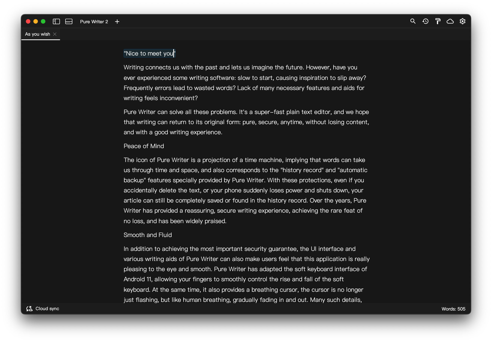

Couldn’t load the latest version. Please refresh the page in a moment.
Not sure which chip your Mac has? Choose Apple menu › About This Mac. If it shows “Chip Apple M…” or “Chip Apple A…”, download the Apple silicon version; if it shows “Processor … Intel …”, download the Intel version.
Please download and update Pure Writer Desktop only from this page, so you don’t end up with an installer that someone else has repackaged with risky code.
SHA-256 checksums

What’s Newv
Installing and Updating
Before updating, quit Pure Writer Desktop, then run the new installer. This way you won’t be asked to restart after installing.
On Windows, some antivirus software flags installers that don’t have a digital signature. Pure Writer is made by a registered company, so you can safely add the installer and the install folder C:\Users\<username>\AppData\Local\Pure Writer 2 to your allowlist.
If Pure Writer doesn’t open after installing, try allowing it through “Ransomware protection” (Controlled folder access) in Windows Security.
If Pure Writer for Windows v2.1.9 is still on your computer, uninstall it first in Settings › Apps › Installed apps, then install the new version.
Syncing with Your Phone
Pure Writer Desktop syncs through a cloud drive. You don’t need a Pure Writer account, and your phone doesn’t need to be online at the same time. In Pure Writer on your phone, choose the same cloud drive as on your computer and sign in to the same account, and the two will stay in sync. Please keep Pure Writer on your phone up to date, too.
Feedback
We’re still polishing Pure Writer Desktop. If you run into a problem or have a suggestion, please email writer@drakeet.com.
お使いの Mac のチップがわからないときは、画面左上のアップルメニューから「この Mac について」を開いてください。「チップ Apple M…」または「チップ Apple A…」と表示されていれば Apple シリコン版を、「プロセッサ … Intel …」と表示されていれば Intel 版を選んでください。
Не удалось получить сведения о последней версии. Обновите страницу чуть позже.
Не знаете, какой чип в вашем Mac? Откройте меню Apple › «Об этом Mac». Если там указано «Чип Apple M…» или «Чип Apple A…», скачайте версию для чипа Apple; если «Процессор … Intel …» — версию для Intel.
Скачивайте и обновляйте Pure Writer только с этой страницы, чтобы не получить установщик, который кто-то перепаковал и добавил в него опасный код.
Контрольные суммы SHA-256
Что новогоv
Установка и обновление
Перед обновлением закройте Pure Writer, а затем запустите новый установщик — тогда после установки не появится запрос на перезагрузку.
В Windows некоторые антивирусы ошибочно считают опасными установщики без цифровой подписи. Pure Writer выпускает официально зарегистрированная компания, поэтому установщик и папку установки C:\Users\<имя пользователя>\AppData\Local\Pure Writer 2 можно спокойно добавить в список исключений.
Если после установки Pure Writer не запускается, попробуйте разрешить ему доступ в разделе «Защита от программ-шантажистов» (контролируемый доступ к папкам) приложения «Безопасность Windows».
Если на компьютере всё ещё установлена версия для Windows v2.1.9, сначала удалите её в разделе «Параметры › Приложения › Установленные приложения», а затем установите новую версию.
Синхронизация с телефоном
Pure Writer для компьютера синхронизируется через облачный диск. Аккаунт Pure Writer не нужен, и телефону не обязательно быть в сети одновременно с компьютером. Выберите в Pure Writer на телефоне тот же облачный диск, что и на компьютере, и войдите в тот же аккаунт — после этого данные будут синхронизироваться в обе стороны. Не забудьте обновить Pure Writer на телефоне до последней версии.
Обратная связь
Мы продолжаем совершенствовать Pure Writer для компьютера. Если вы столкнулись с проблемой или хотите что-то предложить, напишите нам: writer@drakeet.com.